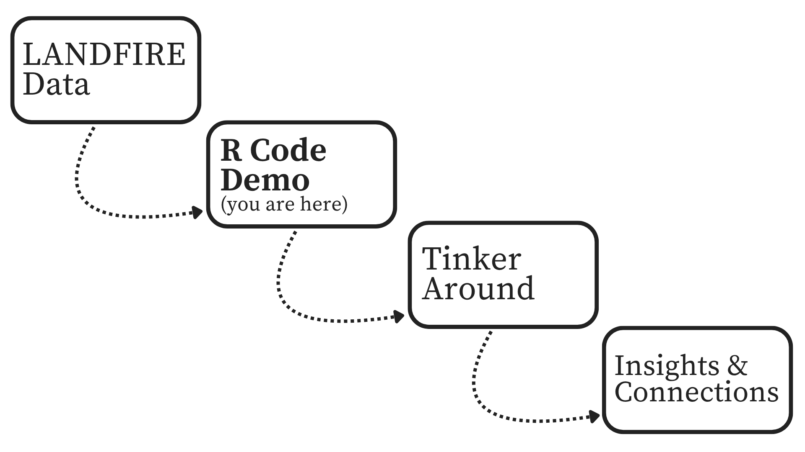
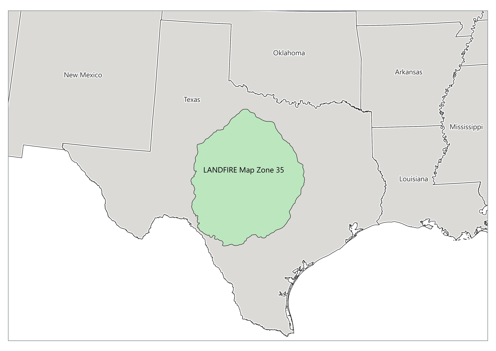

LANDFIRE + R: Accelerate Your Analysis
Why this site?
Do you work with LANDFIRE data and want a faster way to dig into ecological patterns across your landscape? You’re in the right place.
This site features quick R code snippets to help you get started (or go deeper) with LANDFIRE data. We recognize the power of well-written code and encourage the LANDFIRE community to build on this foundation of work. These R code examples are designed to be practical, repeatable, and flexible to fit your needs. We hope the coding tools provided can help you automate your work, leverage LANDFIRE, and get solution-oriented support.
We want to hear from you. Do you have feedback, ideas, or a cool way you’re using LANDFIRE data with R? -> Send them our way. Let’s build a community of practice together.
LANDFIRE
LANDFIRE (Landscape Fire and Resource Management Planning Tools) is a shared interagency wildland fire management data program across the United States and Territories. Leadership, management, and oversight are through the U.S. Department of Agriculture Forest Service - Fire and Aviation Management and the U.S. Department of the Interior – Office of Wildland Fire.
LANDFIRE provides more than twenty landscape-scale geospatial products of biological and ecological data, including (900+) vegetation types and (13/40) fire behavior fuel models that support all-lands planning, fire and natural resources management, operations, analyses and assessments.
Project Team: USGS EROS, EROS Technical Support Services Contract (KBR), The Nature Conservancy, USDA Forest Service (Rocky Mountain Research Station) RMRS, Forest Inventory & Analysis (FIA)
Partners: USGS Gap Analysis, National Land Imaging Programs
🔍 Overview
Step 1: LANDFIRE Data – Choose the LANDFIRE Product for your analysis. Need help deciding? Check the LANDFIRE Products here.
Step 2: R Code Demos – Use the sample R code on this site to explore your area of interest.
Step 3: Adjust LANDFIRE to match local conditions. Not sure how to do that? Check out our tutorial.
Step 4: Insights & Innovations – Build your own tools, share your work, connect with us.
🔍 Making Connections

🔧 Working Example
Using R and LANDFIRE products to explore trends and automate analyses can improve outcomes. Based on current LANDFIRE Products, the example code and visualizations will all be based on Map Zone 35, located in Central Texas.
Contained in Map Zone 35 are multiple ecosystems that provide a colorful sandbox to explore these coding demonstrations.
See map of LANDFIRE Map Zones here. Note: some datasets are compiled by Map Zone so maps or analysis that crosses multiple may result in seamlines or other complications. Contact us to discuss at landfire@tnc.org.
{kind=link}
🗺 Map Zone 35

Getting Started
- Check your R, R-Studio and package versions. We recommend running the most current version of R or R-Studio. See what we used
- Check file paths - is your your R-Studio project correctly set up?
- Let us know if you run into code bugs landfire@tnc.org
LANDFIRE
LANDFIRE (Landscape Fire and Resource Management Planning Tools) LANDFIRE is a shared interagency wildland fire management data program across the United States and Territories. Leadership, management, and oversight are through the U.S. Department of Agriculture Forest Service - Fire and Aviation Management and the U.S. Department of the Interior – Office of Wildland Fire.
LANDFIRE provides more than twenty landscape-scale geospatial products of biological and ecological data, including data such as (900+) vegetation types and (13/40) fire behavior fuel models that support all-lands planning, fire and natural resources management, operations, analyses and assessments.
Project Team: USGS EROS, EROS Technical Support Services Contract (KBR), The Nature Conservancy, USDA Forest Service (Rocky Mountain Research Station) RMRS, and Forest Inventory & Analysis (FIA)
Partners: USGS Gap Analysis, USGS National Land Imaging Program
Disclaimer (the fine print)
The code provided here is offered as-is, without warranty or guarantee of accuracy, functionality, or fitness for a particular purpose. Like any open-source code, it may not perform identically across all systems, versions of R, RStudio, or associated packages. This content is intended for educational and illustrative purposes only and should not be considered a comprehensive guide to R programming. Users are responsible for validating and adapting the code to suit their specific needs and environments. We cannot assume responsibility for any issues, errors, or outcomes resulting from its use.